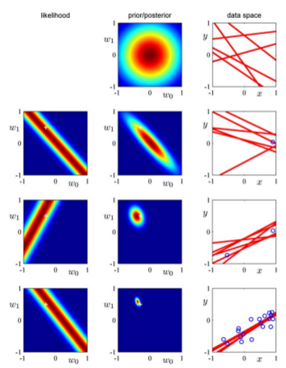

基于贝叶斯估计的线性回归
1 简介
在讨论基于最大似然函数优化的线性回归模型的时候，我们发现模型的复杂度受限于基函数的个数和训练数据集合的大小。通常，为了避免过度拟合（导致巨大的模型系数），我们采用的办法是向对数最大斯然函数加上一个正则项。所以，基于最大似然函数的优化关键在于选择正则项以及基函数的形式。
因此，基于最大似然函数的优化普遍存在模型选择问题。我们必须选择合适的模型以避免过高的复杂度。通常，直接优化似然函数的方法并不可取，这样会导致过度拟合。我们在之前的博文中讨论过使用多份独立的数据做模型选择，但是这样一增加了计算复杂度，二浪费了宝贵数据。在本文中，我们讨论基于贝叶斯的线性回归方案。
2 参数分布
2.1 共轭先验估计
通过引入参数\(\mathbf{w}\)的先验估计，我们讨论基于贝叶斯的线性回归方案。我们假设已经知道噪声的精度\(\beta\)是个常数。我们知道似然函数\(p(\mathbf{t}|\mathbf{w})\)关于\(\mathbf{w}\)的指数二次型函数。那么，其对应的共轭先验函数也一定是高斯分布的。
\begin{equation} \label{eq:1} p(\mathbf{w}) = \mathcal{N}(\mathbf{w}|\mathbf{m}_{0},\mathbf{S}_{0}) \end{equation}这个共轭先验函数的均值是\(\mathbf{m}_{0}\)，协方差矩阵是\(\mathbf{S}_{0}\)。
2.2 后验估计
后验估计是先验估计和似然函数的乘积。由于共轭先验函数是高斯函数，后验估计也是高斯的。对于高斯后验估计我们有：
\begin{equation} \label{eq:2} p(\mathbf{w}|\mathbf{t}) = \mathcal{N}(\mathbf{w}|\mathbf{m}_{N},\mathbf{S}_{N}) \end{equation}其中：
\begin{eqnarray} \label{eq:4} \mathbf{m}_{N}&=& \mathbf{S}_{N}(\mathbf{S}_{0}^{-1}\mathbf{m}_{0} + \beta \mathbf{\Phi}^{T} \mathbf{t}) \\ \mathbf{S}_{N}^{-1} &=& \mathbf{S}_{0}^{-1} + \beta \mathbf{\Phi}^{T}\mathbf{\Phi} \end{eqnarray}权重矢量的最大后验估计\(\mathbf{w}_{MAP}=\mathbf{m}_{N}\)。如果我们假定\(\mathbf{S}_{0} = \alpha \mathbf{I}, \alpha\to 0\)，均值\(\mathbf{m}_{N}\)就会收敛到最大似然解\(\mathbf{m}_{ML}\)。这个\(\mathbf{S}_{0} = \alpha \mathbf{I}\)这个假设意味着相互独立相同分布。如果\(N = 0\)，则后验估计就是先验估计，这表明没有收到任何数据，也就无所谓后验之说。另外，如果数据是串行到达的，那么，当前时刻的后验估计可以作为下一时刻数据的先验估计。注意，迭代的思想就有了。
3 一个例子
我们考虑这样一个先验分布：
\begin{equation} \label{eq:5} p(\mathbf{w}|\alpha) = \mathcal{N}(\mathbf{w}|\mathbf{0},\alpha^{-1}\mathbf{I}) \end{equation}对应的后验分布如~(\ref{eq:2})所示，其中：
\begin{eqnarray} \label{eq:7} \mathbf{m}_{N}&=&\beta \mathbf{S}_{N}\mathbf{\Phi}^{T}\mathbf{t} \\ \mathbf{S}_{N}^{-1}&=& \alpha \mathbf{I} + \beta \mathbf{\Phi}^{T}\Phi \end{eqnarray}后验估计的对数形式是：
\begin{equation} \label{eq:8} \ln p(\mathbf{w}|\mathbf{t}) = -\frac{\beta}{2} \sum_{n=1}^{N} \{t_{n} - \mathbf{w}^{T}\mathbf{\phi}(\mathbf{x}_{n}) \}^{2} - \frac{\alpha}{2}\mathbf{w}^{T}\mathbf{w} + \mathrm{const} \end{equation}根据式~(\ref{eq:8})最大化\(\mathbf{w}\)等效于最小化加了正则项的平方和误差函数，其中正则项的系数为\(\frac{\alpha}{\beta}\)。
接下来，我们来描述一个线性基函数模型和迭代更新后验估计的过程。考虑单输入变量\(x\)，单目标变量\(t\)，以及模型\(y(x,\mathbf{w}) = w_{0} + w_{1}x\)。因为这个模型只有两个自适应参数，我们可以在\(\mathbf{w}\)域直接把先验函数和后验估计画出来。我们从\(f(x,\mathbf{a}) = a_{0} + a_{1}x,a_{0}=-0.3,a_{1}=0.5\)获得数据：首先从均匀分布\(U(x|-1,1)\)中获得随机的\(x\)，然后计算\(f(x,\mathbf{a})\)，最后加上一个标准差为\(0.2\)的高斯噪声。我们的目标是从最终受噪声污染的数据中，恢复\(a_{0},a_{1}\)。我们假定噪声方差是已知的。所以参数的精度为\(\beta = (1/0.2)^{2} = 25\)。同样我们设置\(\alpha = 2.0\)。
图 1 演示了当数据量越来越多时先验估计和后验估计迭代更新的过程。

图 1: 先验估计和后验估计迭代更新的过程
图 1 同时演示了当前的后验估计作为下一个数据到来时\(\mathbf{w}\)先验估计的过程。首先，第一行中间的图对应着还没有数据到达时\(\mathbf{w}\)域上的先验分布，最右边的图对应着随机取\(\mathbf{w}\)六次时\(y(\mathbf{w},x) = w_{0} + w_{1}x\)的图像。我们可以看到这个时候的图像完全是随机的，因为这个时候我们没有收到任何关于\(x\)的信息。
在第二行里，我们收到了一个数据点（第二行最右侧图里的蓝色圆圈）。第二行左手边的图是关于\(\mathbf{w}\)的先验估计\(p(t|x,\mathbf{w})\)。注意这个先验函数约束到所有的\(y(x,\mathbf{w}) = w_{0} + w_{1}x\)都必须经过或者几乎经过接收到的数据点（就是那个蓝色的圆圈）。我们把这个似然函数乘以第一行的先验估计，我们得到了第二行的后验估计。第二行最右边展示了第二行中间的后验估计\(\mathbf{w}\)采样点。我们可以看到这些\(y(\mathbf{w},x) = w_{0} + w_{1}x\)都几乎通过蓝色的数据点。
第三行展示了观测到第二个数据点后的效果。第三行的最左边展示了这个点的似然函数，第三行中间的图展示了这个似然函数与第二行得到的后验函数的乘积后获得的新的后验函数。这个后验函数是受两个数据点影响的函数。因为两个点决定一条直线，所以从这个后验分布上采样的\(\mathbf{w}\)可以比较完美的通过两个数据点（见第三行最右边的图）。
第四行展示了观测到 20 个数据后的效果。左手边的图展示了第 20 个数据点的似然函数，中间的图展示了基于所有 20 个数据点的后验估计。我们可以看到这个后验估计已经相当精确。当有无穷多个数据点到达时，这个后验估计就会变成一个\(\delta\)函数。
4 后记
这篇文章展示了使用贝叶斯方法不断逼近参数\(\mathbf{w}\)真实值的过程。在逼近过程中我们使用的先验函数是高斯的。当然，我们也可以使用其他的先验函数，比如：
\begin{equation} \label{eq:9} p(\mathbf{w}|\alpha) = \bigg[ \frac{q}{2} (\frac{\alpha}{2})^{1/q} \frac{1}{\Gamma(1/q)} \bigg]^{M}\exp\bigg( -\frac{\alpha}{2}\sum_{j=1}^{M}|w_{j}|^{q} \bigg) \end{equation}